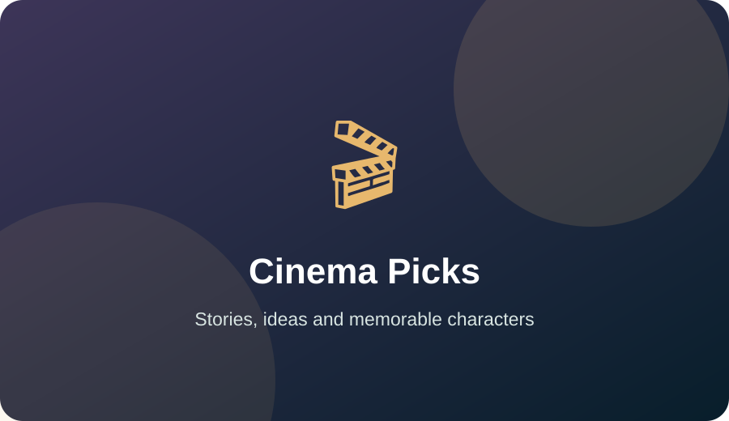

Film · Storytelling · Music
Top 5 Movies
A film page is a place to share stories that entertain, challenge ideas or leave a lasting impression.

My movie list
Starter suggestions only: these are not confirmed personal favourites. Replace them with your actual top five films and add your own reasons.
- Interstellar (2014) — A science-fiction story exploring space, time and human connection.
- The Pursuit of Happyness (2006) — A story about perseverance through difficult circumstances.
- Inception (2010) — A layered story that invites viewers to think about dreams and reality.
- Black Panther (2018) — A superhero film with themes of identity, responsibility and leadership.
- Hidden Figures (2016) — Highlights the contributions of mathematicians and scientists.
My favourite playlist
Add a public Spotify, YouTube Music or Boomplay playlist link here when you have one.
Explore SpotifyExplore YouTube Music